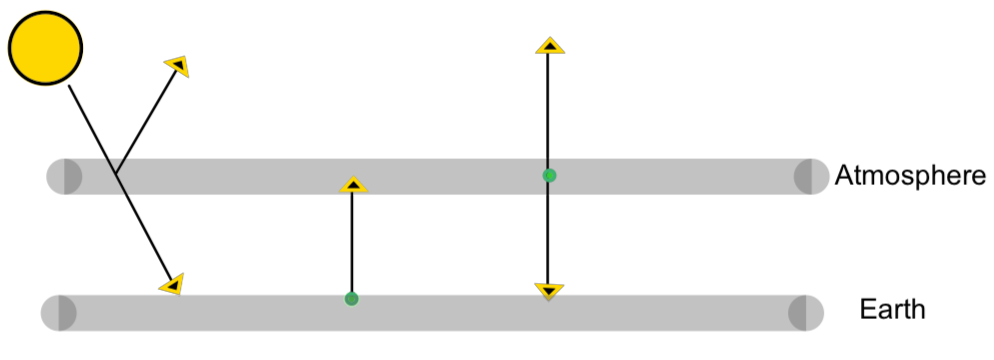

Mathematical models provide a means of capturing how a confluence of variables factor into and effect situations They can also be used to make predictions regarding what is to come. In this section we examine models that lend insight into global warming and the average global temperature predictions. We will look at the Green House Effect and explore how to predict temperature increase based on varying amounts (distributions) of certain greenhouse gasses. The main green house gasses are carbon dioxide, methane, and nitrous oxide. Each has its own impact on temperature increase dependent on a combination of qualities including lifetime, abundance, and radiative capacity. Units and other measures are often defined to capture how a confluence of qualities effect a particular inpact. Global Warming Potential (GWP) and Global Temperature Potential (GTP) are two such examples that will also examine in this section.
The overarching idea of the Green House effect is that energy in the form of radiation enters the atmosphere ("the green house") and while some of the radiation escapes, a percentage of it gets trapped. This trapped radiation is trapped energy or heat which results in increasing the ambient temperature. The percentage of energy that gets trapped and the resulting temperature increase depends on the molecular make up of the atmosphere.
Green House gasses are gasses that trap energy. Some of the gasses such as water vapor (\(H_20\)) are necessary for maintaining a stable temperature warm enough to supports life. However, growing amounts of other Green House gasses such as carbon dioxide (\(CO_2 \) ), nitrious oxide (\(N_2O\) ), and methane \((CH_4)\) have the effect of increasing the temperature potentially beyond livable conditions. How much energy gets trapped the depends on the molecular make up of the atmosphere.
In this section we will work through a simplified mathematical model with the goal of building intuition for how each compnent plays a role in the system.
When electromagnetic radiation is incident upon an object, some of the radition is absorbed while some is reflected. The specific proportions that are absorbed and radiated depend on the properties of the object and whether it is in thermodynamic equlibrium with the surrounding evironment. A blackbody is an perfect object in the sense that it abosorbs all the radiation incident upon it and emits radiation depending solely on its temperature.
There are two important properties of blackbodies that we will rely on in our modeling. One is that blackbodies are "perfect" emitters.
Not only is the amount of radiation emitted dependent only on temperature but also, for a fixed temperature, blackbodies emit at the maximal energy level. More specifics of this radiation are described below.
A blackbody in thermodynamic equilibrium (i.e with constant uniform temperature) emits electromagnetic radiation at a spectrum of wavelengths determined solely by the temperature of the body. The emission brom blackbodies is called blackbody radiation .
Blackbodies emit different amounts of energy at different wavelengths. How much radiation a blackbody emits at each wavelength is called the blackbody spectrum and is determined by Plank’s law.
Below is a graph showing the blackbody spectrum. Each curve is the spectrum for blackbody at the indicated temperature. The temperatures are in Kelvin. Note that \(0^o C \) is \(273.15 K\) and \(T(^oC) = T(K) - 273.15\) so for high temperatures like \(3000 K\) or \(2726.85^o C\) the magnitude in degress Kelvin and degrees Celcius are on the order of magnitude. For reference the sun has a temperature of 5778 Kelvin
This is a graph of the blackbody spectrum depicting the amount of radiation emmitted at each wavelength for blackbodies at temperatues of 3,000 Kelvin, 4,000 Kelvin, and 5000 Kelvin. Each curve has a single peak and is skewed left. At the temerature increases, the peak of the curve shifts left, occuring at shorter wavelenghts. The wavelengths in the UV spectrum (0.01 to 0.38 \(\mu m \)) are indicated by a vertical rectangle. The blackbody at 3000 Kelvin peaks in intensity at about 0.97 \(\mu m \) (in the near infrared). The blackbody at 4000 Kelvin peaks in intesity at about 0.725 \(\mu m \) (visible but slightly too long for red). The blackbody at 5000 Kelvin peaks in intensity at 0.58 \(\mu m \) (visible green light)
Figure5.7.3.This graph depicts the blackbody spectrum showing the intensity of emission versus wavlength for blackbodies at temperatures of 3000, 4000, and 5000 Kelvin.
Very few objects are perfect blackbodies. However many are close enough in the sense that assuming blackbody radiation in calculations yeilds results that lend an accurate perspective. Of course the closer an object is to being a blackbody, the more acurate the calculations will be. For our models we will need the relationship between the amount of radiation emitted by a blackbody and its temperature. The Stefan-Boltzmann law gives this relationship and states that the total energy, \(J \) emitted per unit area per unit time by a blackbody is directly proportional to the fourth power of its temperature. The units are terms joules per second per square meter and are denoted \(j/sm^2\) . So \(J \propto T^4 \) or \(J =\sigma T^4 j/s m^2\) where \(\sigma = 5.67 \times 10^{-8} \) with units of \({W\,m^{-2}\,K^{-4}} \) is the Stefan-Boltzman constant.
The radiative bodies that will play a role in our models are the Sun, Earth, and layers of the atmosphere. In our calculations we will assume that the Sun and Earth radiate as perfect blackbodies. The layers of the atmosphere are not close enough to perfect blackbodies so we will take them to be what is called graybodies.
The term graybody refers to an imperfect blackbody in the sense that it absorbs only a propotion of the incident radiation. Graybodies can be more reflective of reality and adjusting for the lower absorption rate is a matter of scaling by what is called the emissivity.
The emissivity, \(\epsilon \) of a radiating object is the ratio of the amount of radiation the object emits compared to amount of radiation a blackbody at the same temperature, emits.
A graybody that absorbs only a proportion of incident radiation also emits a proportion of the blackbody radiation. For our models we assume the proportion absorbed is the same as the proportion emitted. This absorption/emission propotion is exactly the emissivity of the object. So, for a graybody at temperature, \(T\text{,}\) with emissivity \(\epsilon\) the total energy, \(J\text{,}\) emitted per unit area per unit time is \(J =\epsilon\sigma T^4 j/sm^2 \text{.}\)
Our goal is not to create a perfect model that caputes every physical detail but rather invoke some simple mathematics so that we can view the conceptual model through an analytical lense. In the process we will introduce and engage with the mathematical thought that goes into modeling. We will work our way up step by step each time making a single generalization reflecting a bit more physical reality.
The Sun radiates energy in all directions. Some of the Sun’s energy is reflected by the atomosphere and the rest reaches the Earth. In our models, we will assume that the amount of solar energy reaching the Earth is fixed. We will deonte this value by \(Q\text{.}\) However, in reality, the amount of solar energy reaching Earth is starting to increase. This increase is caused by a decrease in albedo. Albedo, denoted \(\alpha \text{,}\) is the proportion of solar energy that is reflected by the atmosphere. Melting ice caps, catalyzed by global warming, are responsible for the decrease in albedo. While we will not take the changing albedo into account, doing so could make a great extension project.
We will denote the amount of energy the Earth radiates by \(J_E \text{.}\) For the purpose of our models we will take the Earth to be a blackbody. By the Stefan-Boltzmann law, \(J_E \propto T_E^4 \) or \(J_E =\sigma T_E^4 j/s m^2\) where \(T_E \) is the temperature of Earth’s surface.
We will be treating the atmosphere as a graybody. Initially we will take the atmosphere to be a single body. We wil denote the amount of energy that radiates out from the atmosphere as \(J_a \text{.}\) As a graybody, \(J_a \propto T_a^4 \) and \(J_a=\epsilon_a \sigma T_a^4 j/s m^2\) where \(T_a \) is the temperature of the atmosphere and \(\epsilon_a \) is the emissivity of the atmosphere. Recall that as graybody, the atmosphere also aborbs only a proportion, \(\epsilon_a \text{,}\) of radiation incidident upon it.
Subsubsection5.7.2.1First Model: one level of atmosphere
In this model we have our Sun, the Earth’s surface, and the atmosphere. Solar energy reaches Earth’s surface. The Earth radiates out engery as a blackbody. The atmosphere absorbs a proportion, \(\epsilon_a \text{,}\) of energy radiated by the earth and also radiates out energy as a graybody.

Figure5.7.9.The Sun, Earth’s surface, and atmosphere all radiate out energy as well as absorb energy from the other bodies.
Both the Earth’s surface and the atomosphere radiate isotropically (i.e equally in all directions). We capture this in our model by assuming half of the energy radiated by the atmosphere escapes out while half radiates back towards the earth. Since the Earth is a lower physical boundary in our model, we assume all the earth’s radiation moves outwards and reaches the atmosphere. Let’s include radiation labels in out diagram.
Recall that our system involving the Sun, Earth, and atmosphere is in a state of equilibrium. This means the amount of radiation absorbed by each body is equal to the amount radiation that body emits. We can write out a set of equilibrium equations.
Now let’s use the Stefan-Boltzman law to write the radiation \(J_E\) and \(J_a\) in terms of temperature. With \(J_a=\epsilon_a \sigma T_a^4 ~ j/s m^2 \) and \(J_E = \sigma T_E^4 j/sm^2 \) the equations become
What we really want to understand is how the emissivity of the atmosphere \(\epsilon_a \text{,}\) affects the temperatures of the Earth and the atmosphere since emissivity is the link between greenhouse gasses and temperature increas. The higher the emissivity, \(\epsilon_a \text{,}\) the more radiation our atmospher absorbs or traps. The absorption of radiation is due to molecules in the atmosphere and higher concentrations of greenhouse gasses push up \(\epsilon_a \text{.}\)
First use the "atmosphere" equation to relate the termperatures of the Earth and atmosphere. Simplifying the last "atmosphere" equation we see that the temperature of the Earth is related to that of the atmosphere by \(T^4_E = 2 T^4_a \) or
Now we use the "earth" equation to write \(T_e \) and \(T_a\) in terms of the know quatities,Q and \(\sigma \text{,}\) and the emissivity \(\epsilon_a \text{.}\)
Currently the sufrace temerpature of the Earth is about \(15.2 ^{o}C\text{.}\) In Kelvin this is \(T_E = 288.3 K\text{.}\) If we plug this temperature into our equation above we can use our model to predict the current atmospheric emissivity.
For the current Earth temperature of 288.3 K or \(15^oC\text{,}\) our model estimates \(\epsilon_a\) as 0.947. The actual value of \(\epsilon_a \text{,}\) accoding to , is predicted to be \(\epsilon_a = 0.78 \text{.}\) In the next section you will have a chance to incorporate more details and develop a more presice model. In the meantime, while our model is somewhat off, we can still look at how a change in emissivity due to an increase in green house gasses effects the Earth’s temperature.
Let’s use our model to see the what is effect of an increase of 0.019 in emissivity (and thus in doubling the amount of carbon dioxide in the atmosphere) on the Eath’s temperature. We have two options for using our model to predict the change in temperature.
We can use the actual value of \(T_E = 288.3 \) and our predicted value of 0.947 for \(\epsilon_a\)
Use the actual value of 288.3 K for \(T_E \) and the our model’s predition of 0.947 for \(\epsilon_a\) . If the amount of carbon in the atmosphere were to double today so that \(\epsilon_a\) would increase by 0.019, use our model to determine the increase in the Earth’s temperature. In the atmosphere’s temperature.
Use the actual value of 0.78 for \(\epsilon_a\) and the current temperature predicted by our model for \(T_E \text{.}\) If the amount of carbon in the atmosphere were to double today, \(\epsilon_a\) would increase from 0.019 from 0.78 to 0.80. According to our model, what is the increase in the Earth’s temperature? In the atmosphere’s temperature?
In the exercises above you determined that if the amount of carbon dioxide in the atmosphere were to double, the Earth’s temperature would increase \(4^o\) or \(5^o\) depending on if we used the actual value for earth’s temperature or atmosphe’s emissivity and used our model to predict the emissivity or temperature respectively.
Let’s compare our results to those stated in the literature. According to , the Earth’s temperature is currently 288.3 K or \(15.2^oC \) and the atmospheric emissivity is \(\epsilon_a = 0.78 \text{.}\) If the amount of carbon dixoide in the atmosphere were to double \(\epsilon_a \) is predicted to increase from 0.78 to 0.80 which in turn would cause the Earth’s temperature to increase \(1.2^o\) from 288.3 K (\(15.2^oC\)) to 289.5 K (\(16.4^oC \)).
Our model is not that far off and while our model is not precise it allows us to see and feel the effect of doubling the level of carbon dioxide in the atmosphere. However, when it comes to climate change and predicting temperature increase we do want to experts to have a smaller margin of error.
Now that we have developed some analytical intuition for the greenhouse effect, we are ready for the next step. We will build on our current model, taking into accout other physical factors that will hopefully result is more presision.